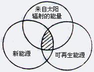
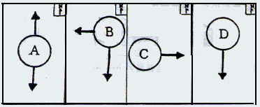
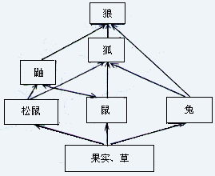
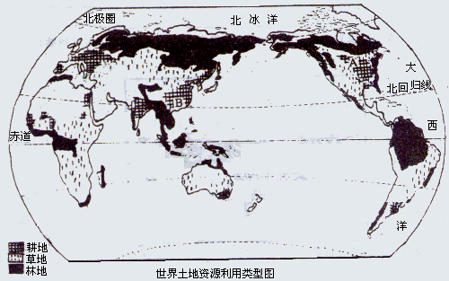
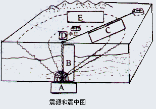
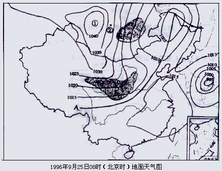
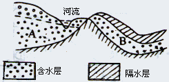
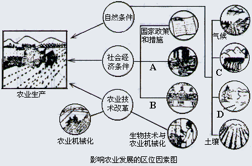
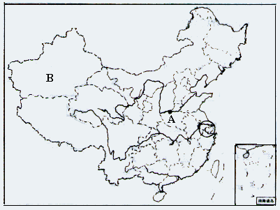
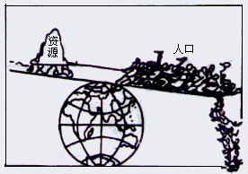

2000
年广西壮族自治区普通高中毕业会考试卷
一、单项选择题（每小题2分，共50分）
下列各小题均有
4个选项，其中只有一项是正确的。将正确选项的序号写在题干后括号内。多选、不选或错选，该小题不得分。1、在宇宙各类天体中，最基本的是………………………………… （ ）
A、太阳和月球 B、流星和彗星 C、行星和卫星 D、星云和恒星
2、10月1日这一天，太阳直射点的位置是……………………………（ ）
A、在北半球，并向南移动 B、在南半球，并向南移动
C、在北半球，并向北移动 D、在南半球，并向北移动
3、影响太阳幅射强度的主要因素是……………………………… （ ）
A、海陆位置 B、海拔高度
C、太阳高度角 D、厄尔尼诺现象
4、海水盐度是指……………………………………………… ………（ ）
A、海水中所含氯化钠等盐类物质总量
B、1000克海水中所含溶解的盐类物质的总量
C、1000克海水中所含固体物质的总量
D、海水中所含的盐类物质数量的平均值
5、右边四幅示意图中，与东非大裂谷地质构造相符的图是………… （ ）
A、① B、② C、③ D、④
6、反映一个国家或地区水资源丰富或贫乏程度的主要指标是………（ ）
A、地表淡水资源的总量 B、地表已被人们利用的淡水资源总量
C、多年平均径流总量 D、多年平均降水量
7、阿拉伯半岛属于下列板块中的………………………………………（ ）
A、亚欧板块 B、太平洋板块 C、非洲板块 D、印度洋板块
8、沙漠地区的植物，其生态特点一般是………………………………（ ）
A、根系不发达 B、多寄生植物
C、叶子很小，有的叶面有蜡层 D、叶子柔嫩硕大
9、关于自然资源的叙述，正确的是……………………………………（ ）
A、所有的自然资源的分布都具有明显的地带性规律
B、可再生资源可以无限制地开发利用
C、没有多样性的生物与人类共存，人类无法单独存在
D、沙漠、石山不是土地资源
10、我国已参加国际人与生物圈保护区网的自然保护区有……………（ ）
A、云南西双版纳 B、广西桂林山水
C、安徽黄山 D、广东珠江三角洲
11、在我国湖南、江西、广西宜建设的区域性矿产基地是……………（ ）
A、铁矿产基地 B、煤碳矿产基地
C、磷矿产基地 D、有色金属矿产基地
12、右图为“能源分类相关图”，以下四组能源选项中，
全部符合图中阴影部分的能源是………………………………… （ ）
|  |
A、煤炭、石油 B、太阳能发电、风能发电
C、水能、生物能 D、地热发电、核能发电
13、我国播种面积最大的油料作物是（ ）
A、油菜 B、胡麻 C、芝麻 D、花生
14、沼气是我国广大农村比较理想的能源，这是因为：……… （ ）
A、原料丰富，可以就地分散制取 B、投资大，建设周期短
C、各地可常年制取使用 D、能量巨大，原料运输最小
15、影响实现农业水利化、机械化的主要自然条件是…………………（ ）
A、地形条件 B、农作物类型 C、土壤条件 D、光热条件
16、既可减轻铁路运输的压力，又能更好地发挥山西煤炭资源的社会经济效益，
最有效的途径是……………………………………（ ）
A、限制煤炭资源开发 B、加快地质勘探步伐
C、把煤炭转换成电能输出 D、改用公路输出
17、下列有关发展中国家农业生产的正确叙述是…………………（ ）
A、东南亚稻米产区农业现代化水平较高
B、巴西等国新垦区的农业机械化水平较高
C、热带地区的企业化种植园，产品的商品率较低
D、在非洲等地的热带雨林地区已全部实现农业现代化
18、农业经济基础在工业布局中的作用，主要体现在为工业发展提供（ ）
A、能源 B、资金 C、技术 D、劳动力、粮食和副食品
19、关于20世纪五十年代以来新的技术革命的说法，正确的是………（ ）
A、以电气化为主要标志
B、出现了化学、汽车与飞机制造等新工业部门
C、出现了电子计算机工业、高分子合成工业等高新技术部门
D、使工业布局进一步受到能源的地域限制
20、在我国新建纺织工业中心中，既是棉纺织中心又是毛纺织中心城市是 （ ）
A、乌鲁木齐 B、林芝 C、西宁 D、郑州
21、近年来，一些国家由于社会经济、文化教育的原因，出现人口停止增长或负增长，
这些国家是……………………………………………（ ）
A、日本和西亚多数国家 B、欧洲和北美发达国家
C、东南亚与南亚多数国家 D、非洲大部分国家
22、第二次世界大战以来，世界城市发展的特点是…………………（ ）
A、城市人口比重不断下降 B、大城市不断涌现
C、城市发展速度变缓 D、城市从内陆向沿海发展
23、关于我国城市发展的基本方针的叙述，正确的是………………（ ）
A、大力发展中小城市 B、严格控制小城镇数量
C、建设具有地方特色的新型乡镇 D、继续扩大大城市规模
24、下列环境中，属于自然环境的有…………………………………（ ）
A、承德避暑山庄 B、渤海湾的滩涂
C、黄土高原的梯田 D、北京十三陵水库
25、以下生产活动，有利于人类与环境统一的是……………………（ ）
A、无节制地抽取地下水 B、工业废水直接排放到江河中
C、砍伐森林以扩大耕地面积 D、营造“三北”防护林带
二、双项选择题（共10分
，请同学们注意：从2001年会考起，改为多项选择题，即有2个或2个以上答案）下列各小题均为
4个选项，其中只有两个选项是正确的。将正确选项的序号答在题干后括号内。要两个选项全对方能得分。多选、少选、错选或不选，该小题不得分。
26、太阳系九大行星中，属于类地行星的是…………………………（ ）
A、水星和火星 B、海王星和木星
C、地球和金星 D、木星和冥王星
27、有关化石的叙述，正确的是………………………………………（ ）
A、可以预测地震的发生 B、可以确定地层的顺序和时代
C、能够确定地层准确的厚度 D、能够推知岩石沉积的环境特征
28、关于世界粮食的说法，正确的是…………………………………（ ）
A、按大洲计算，北美洲粮食总产量最多
B、按国家计算，美国玉米产量居世界首位
C、按国家计算，中国粮食产量最多
D、按人均计算，南美洲粮食产量最少
29、关于沪宁杭工业基地的叙述，正确的是…………………………（ ）
A、以上海为主要中心，包括武汉宜昌等城市在内
B、是我国规模最大、结构最完整、技术水平和效益最高的工业基地
C、工业结构以轻型及精密机械、轻纺等工业最为突出
D、常规能源缺少，但其它矿产资源丰富
30、下列现象中属于环境对人类的反馈作用的是………………………（ ）
A、电离层受干扰，无线电短波通讯中断
B、地震和火山灾害
C、森林被破坏导致旱灾害频繁
D、田地里的青蛙遭捕杀致使农业减产
三、配对组合题（每小题4分，共8分。填写答案只需填序号）
31、将下列降水与所属降水类型配对组合。
| 降水 | 类型 |
| A、我国长江中下游地区每年初夏的梅雨 | ①台风雨 |
B、我国东南沿海7～9月间出现伴随8～12级大风的暴雨 |
②对流雨 |
| C、我国台湾东北部山地迎风坡的主要降雨 | ③锋面雨 |
| D、赤道地区午后的短时雷阵雨 | ④地形雨 |
答：A配 ；B配 ；C配 ；D配 。
32、当前世界工业布局有由集中走向分散趋势。将下列工业扩散方向示意图与相对应的国家配对组合。
工业扩散方向 |
国家 |
|  | ①美国 |
| ②日本 | |
| ③德国 | |
| ④俄罗斯 |
答：A配 ；B配 ；C配 ；D配 。
四、读图分析题（每小题4分，共20分）
33、右图为食物网示意图，读后回答下列问题。
|  |
⑴在本食物网中，生产者是
⑵属于初级消费者的动物有
。⑶狼既属于次级消费者，又属于
级消费者。⑷在本食物网中，数量最少的生
物体是 。34、下图为“世界土地资源利用类型图” ，读后回答下列问题。
|  |
⑴世界现有林地主要分布在
等地区。⑵世界主要的草场资源分布在 和 两个自然带内。
⑶图中
A处粮食作物以 为主，B处粮食作物以 为主。35、右图为“震源和震中图” ，读后回答下列问题。
|  |
⑴图中ABCDE五处，表示震源的是 。
⑵若本地发生
4.5级地震，李庄村民受到震动的感觉可能先是 ，后是 。⑶产生以上震感的原因是 。
36、下图为“1996年9月25日地面天气图” ，读后回答下列问题。
|  |
⑴图中①处是高气压中心还是低气压中心？答： 。
⑵图中②处吹
风。⑶图中
A为锋，是冷锋还是暖锋？答：
。判断的理由是 。
37、下图为我国某地区地形剖面图，读后回答下列问题。
|  |
⑴A、B两处地下水中， 处为潜水， 处为承压水。
⑵河流与地下水A的补给关系是
⑶在降雨历时较长，降水强度不太大，地形坡度平缓的情况下，
有效地地加地下水径流量的有效方法是 。
五、综合简答题（每小题4分，共12分）
38、下图为“影响农业发展的区位因素图” ，读后回答下列问题。|  |
图中A、B、C、D分别是表示影响农业发展的因素，其中，
A表示的是： ；B表示的是 ；
C表示的是： ；D表示的是 。
39、下图为我国行政区划图，读后回答下列问题。
|  |
⑴图中的A是正在建设中的 水利枢纽工程。
⑵图中的B地区将建成为我国西部能源生产基地，能源类型是 。
⑶图中C的地区能源紧张的原因是 为缓和该地区能源短缺问题，已在沿海建设了 。
40、下图是关于人类与环境对立统一关系漫画，根据所学地理知识，用可持续发展的观点来回答以下问题。|  |
⑴这幅漫画能反映什么问题?
⑵以上问题产生的根本原因是什么？ 。
⑶解决这些问题的根本途径是什么？
2000
年广西地理毕业会考参考答案一、
单项选择题（50分）二、双项选择题（10分）题号 |
1 |
2 |
3 |
4 |
5 |
6 |
7 |
8 |
9 |
10 |
11 |
12 |
13 |
14 |
15 |
16 |
17 |
||||
答案 |
D |
B |
C |
B |
D |
C |
D |
C |
C |
A |
D |
B |
A |
A |
A |
C |
B |
||||
题号 |
18 |
19 |
20 |
21 |
22 |
23 |
24 |
25 |
26 |
27 |
28 |
29 |
30 |
||||||||
答案 |
D |
C |
A |
B |
B |
C |
B |
D |
AC |
BD |
BC |
BC |
CD |
||||||||
三、配对题（
8分）31
、A③ ； B① ； C④ ； D② ； 32、A② ； B① ； C ④ ；D③ ；四、读图分析题（
20分）33
、（1）果实、草；（2）松鼠、鼠、兔；（3）三；（4）狼。34
、（1）非洲赤道、北美、南美、亚洲北部和东南部； （2）热带草原、温带草原； （3）小麦；水稻；。35
、（1）A；D；（2）上下颠簸；前后左右摇晃（3）先是纵波到达；后是横到达36
、（1）高气压中心；（2）西北风。 （3）冷锋。我国大部分地区吹偏北风，说明冷空气占优势，推动暖空气向南移动37
、（1）A；B（2）河水补给地下水。（3）植树造林、种草；38
、A工矿区和城市发展与分布；B市场需求量；C水源；D地形39
、（1）黄河小浪底 （2）石油； （3）工农业发达，耗能源多；常规能源分布少；秦山核电站；40
、（1）人口增长太快，需要大量自然资源，生态环境恶化、失去平衡； （2）人口增长太快 （3）控制人口数量，提高人口素质；搞好国土整治工作；保护环境；